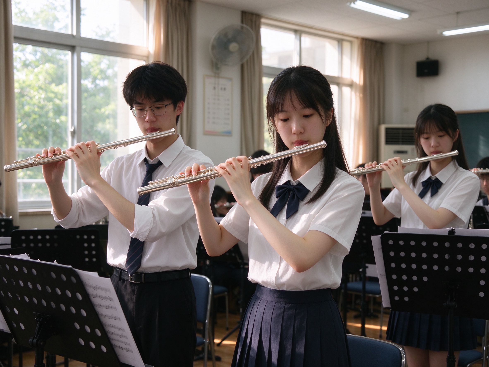

社团简介 | 活动安排 | 风采展示 | 社员故事 | 在线报名
校园长笛社成立于 2012 年，是学校历史较为悠久、氛围最为纯粹的文艺类学生社团之一， 同时也是校大学生艺术团下辖的重要器乐社团。社团以长笛这一音色清亮、表现力丰富的木管乐器为核心， 常年组织日常练习、基本功训练、重奏合奏、校园音乐会以及校内外文艺演出等多种形式的活动， 为所有喜爱长笛、热爱音乐的同学搭建起一个交流、学习与展示自我的平台。
长笛是现代管弦乐和室内乐中主要的高音旋律乐器，外形纤细优雅，音域宽广、音色清澈如水， 既能吹奏轻快活泼的舞曲，也能演绎深情婉转的慢板，更能胜任技巧华丽的独奏曲。 与许多人想象中“长笛很难、离自己很遥远”的印象不同，长笛入门相对友好， 只要掌握正确的呼吸方法与指法，零基础的同学经过一段时间的系统练习，同样可以吹出完整动听的旋律。 长笛社欢迎每一位对它抱有好奇与热爱的同学，无论你此前是否接触过乐器，都能在这里找到属于自己的位置。
社团始终坚持“以乐会友、以艺育人”的宗旨，倡导轻松而不失专业的学习氛围。 针对零基础的新成员，社团会在每学期初开设长笛基础教学公开课，由指导老师和经验丰富的老成员 从持笛姿势、口型、腹式呼吸、指法表等最基础的内容讲起，循序渐进地带领大家入门； 针对已经有一定基础的同学，社团则会安排重奏训练、曲目打磨与舞台实践， 帮助大家在合奏中培养乐感、在演出中积累经验。老成员对新成员实行“一对一”帮带制度， 从选购乐器、日常保养到练习中遇到的任何疑难问题，都会有人耐心解答，不让任何一个人掉队。
在日常活动之外，长笛社还拥有丰富的舞台实践机会。社团每年固定参与迎新晚会、新年音乐会、 校园文化艺术节、毕业季专场演出等大型活动，并多次代表学校参加省市范围内的大学生艺术展演 与器乐比赛，屡获佳绩。此外，社团还会不定期策划“午后长笛沙龙”“草坪迷你音乐会” “重奏作品分享会”等轻松的小型活动，让成员们在正式舞台之外，也能自由地享受演奏本身的乐趣。 许多成员正是在一次次排练与演出中，从对着谱架紧张发抖的新手，成长为能够从容独奏的演奏者。
社团平时的活动地点主要设在学生活动中心的音乐教室，每周安排固定的集体练习与分声部训练时间， 成员也可以根据课表自行预约琴房练习。社团配备有专门的谱架、乐谱资料与排练场地， 并建立了共享乐谱库，收录了从古典名曲、动漫影视配乐到流行歌曲改编在内的大量曲谱， 满足不同喜好、不同水平成员的需要。每临重要演出，社团还会组织加练， 指导老师全程跟进，确保每一位登台的成员都能呈现出最好的状态。
加入长笛社，收获的绝不仅仅是一项乐器技能。在这里，你会结识一群志同道合、彼此温暖的伙伴， 大家一起在清晨的琴房里练长音，一起为一个难点乐句反复打磨，一起在演出结束后分享掌声与喜悦， 也一起在忙碌的学业生活中守住一片属于音乐的安静角落。长笛清亮的声音里，藏着专注、坚持与热爱， 也藏着许多人大学生活中最珍贵的回忆。
无论你是从未接触过乐器、却一直心怀向往的零基础同学，还是已经学过多年、希望在大学继续演奏的“老玩家”， 只要你对长笛和音乐抱有一份真诚的热爱，长笛社的大门都向你敞开。新的学期，期待与你相遇， 让我们一起把气息化作旋律，在银色的长笛上，吹奏属于青春的清澈乐章。
为了让新同学更好地了解长笛社的日常运行，本学期计划安排如下几项主要活动。 具体时间与地点可能会根据学校统一安排略作调整，详情请关注社团内部通知与群公告。
| 长笛社 2026 年春季学期活动安排表 | |||
|---|---|---|---|
| 活动名称 | 活动时间 | 活动地点 | 负责人 |
| 新成员见面会 | 3 月第 2 周 周五晚 | 学生活动中心 音乐教室 302 | 张强 |
| 长笛基础教学公开课 | 3 月第 3 周 周六下午 | 李娜 | |
| 午后长笛沙龙 | 4 月第 2 周 周三下午 | 学生活动中心 排练厅 205 | 王浩 |
| 校园草坪迷你音乐会 | 5 月第 1 周 周日 | 操场东侧草坪 | 刘芳 |
| 期末专场音乐会 | 6 月第 1 周 周六晚 | 大学生活动中心 大礼堂 | 陈静 |
上表仅列出了本学期具有代表性的几项活动，日常还会有小型即兴重奏、基本功打卡、 名曲欣赏与经验分享等活动贯穿始终。欢迎有想法、有创意的同学参与到活动策划中来， 一起把长笛社的活动办得更加丰富有趣。

图为长笛社成员在音乐教室内进行集体排练的场景。阳光透过窗户洒在谱架上， 清亮的笛声在教室里回荡。平时每一次看似平常的训练与打磨， 都会在正式演出的舞台上得到充分的展示与回报。
。
小林大一加入长笛社之前，完全没有学过任何乐器，连五线谱都认不全，只是在一次迎新晚会上 被一段长笛独奏深深打动，便凭着一股冲动报了名。第一次拿起长笛时，她连声音都吹不出来， 不是漏气就是发出刺耳的“气音”，一度怀疑自己是不是根本没有天赋。带她的学姐没有急着教曲子， 而是陪着她一遍遍地练习口型和腹式呼吸，又把每天的长音练习拆解成可以坚持的小目标。 小林给自己定下规矩，每天晚自习后到琴房练四十分钟，从吹不响一个音，到能平稳地吹满一个长音， 再到指法逐渐连贯。一个学期之后，她已经能完整地吹奏好几首优美的小品， 并在第二年的新年音乐会上完成了自己的首次舞台独奏。当最后一个音符落下、掌声响起的那一刻， 她忽然明白，所谓天赋，很多时候只是愿意比别人多坚持一会儿。
小周是一个性格十分内向的男生，平时在课堂上被点名回答问题都会脸红，更不敢在众人面前表现自己。 加入长笛社，对他来说原本只是想“安静地学一门乐器”。可合奏训练天然需要沟通与配合， 从最初只敢小声说出自己的想法，到后来能主动和大家讨论一个乐句的处理， 他在一次次排练中慢慢习惯了表达，也慢慢相信自己的声音值得被听见。在一次小型社团汇报演出中， 他鼓起勇气参加了长笛二重奏，灯光亮起时大脑一片空白，可当熟悉的旋律从自己的笛子里流淌出来， 所有的紧张都化作了专注。演出结束后，台下热烈的掌声让他红了眼眶。 如今的他不仅能从容登台，还成了负责带新成员的学长，他总说，是长笛社让他知道， 原来自己也可以闪闪发光。
许多社员在回忆长笛社时，提到最多的并不是学会了多少首曲子，而是在这里遇到的人。 大家来自不同的学院、不同的专业，白天各自奔波在课堂和实验室之间， 到了傍晚便聚在同一间音乐教室里，对着同一份谱子磨合呼吸与节拍。演出前一起加练到深夜， 有人负责带夜宵，有人负责抠细节；谁的长笛出了故障，总有人立刻帮忙调试； 谁考试周压力大、情绪低落，排练结束后一群人就陪着在校园里慢慢走、轻声聊。 一位已经毕业的学姐在留言里写道：“长笛社于我而言，早就不只是一个社团，而是大学里的第二个家。” 因为一支银色的长笛，天南海北的人聚到一起，成了可以并肩演奏、也可以彼此依靠的朋友， 这份情谊，往往比音乐本身更长久。
小孙是一名计算机专业的学生，每天被代码、算法和实验报告填满，节奏快得让人喘不过气。 大一时他偶然加入长笛社，本以为会挤占学习时间，没想到反而成了他调节生活的秘密武器。 他发现，吹长笛讲究的腹式呼吸和全神贯注，能让高速运转的大脑迅速沉静下来， 每当调试程序遇到瓶颈、心情烦躁时，只要拿起长笛吹上半小时，思路反而会清晰许多。 几年下来，他不仅没有耽误学业，还跟着社团登上了一场又一场舞台， 甚至把自己喜欢的游戏配乐改编成了长笛重奏版本，在社团沙龙上演出后大受欢迎。 他常笑着说：“写程序和吹长笛看起来毫不相干，其实都需要耐心和热爱， 是长笛让我在紧张的工科生活里，始终保有一份从容和浪漫。”
这样的故事，在长笛社里还有很多很多。有人在这里第一次拥有了站上舞台的勇气， 有人在这里结识了相伴多年的挚友，也有人在这里为忙碌的青春找到了一处可以安放热爱的角落。 如果你也向往那种清亮悠远的声音，期待在大学生活中拥有一段与长笛有关的美好回忆， 那么请不要再犹豫，加入我们吧，让我们一起把青春吹进旋律里，让每一个平凡的日子， 都因为音乐而变得不同。
请认真填写以下信息，确保联系方式准确无误。提交后，社团会通过手机短信或邮箱 通知你后续的面谈与试音安排，零基础的同学同样可以放心报名。
提交表单后，如需修改信息，可以再次填写并提交最新的一份。期待与你在长笛社相见。
校园长笛社 · 2026 年招新网页
本页面为 HTML 基础上机作业作品。